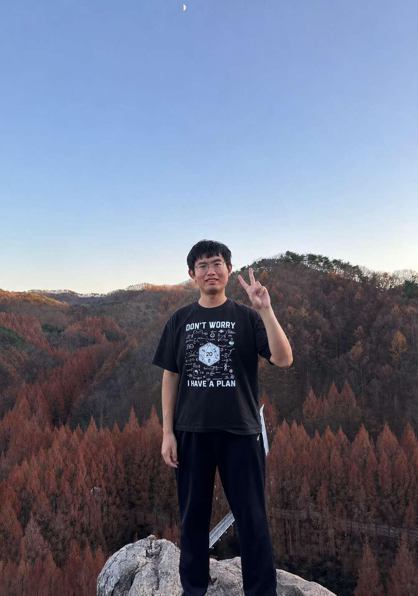

Email: lanchaowang[at]foxmail[dot]com
I am a jointly supervised PhD student at Nanjing University and IBS ECOPRO, under the supervision of Prof. Yaojun Chen and Prof. Hong Liu. I am currently studying in South Korea. I received my B.S. from Shandong University in 2021, with Prof. Guanghui Wang as my thesis advisor.